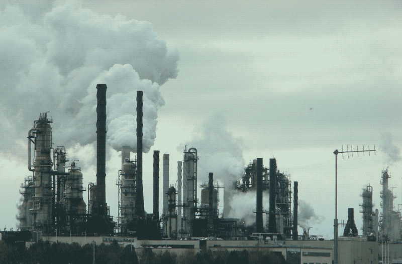
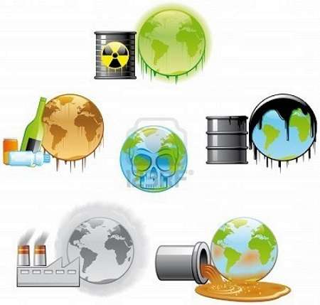
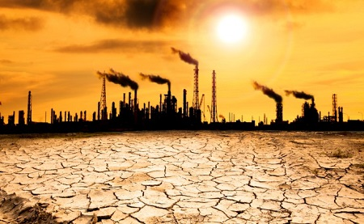
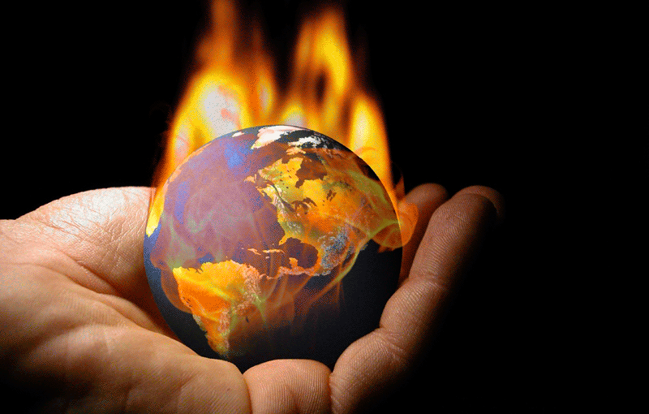

Medio ambiente natural es
aquel entorno conformado por elementos que nacen de manera natural,
sin intervención humana; a diferencia del medio ambiente construido que es el que comprende
modificaciones dadas a partir de la población humana.
Es el área condicionada para la vida de diferentes seres vivos donde se incluyen elementos naturales,
sociales, así como también componentes naturales; como lo es el suelo, el agua y el aire ubicados
en un lugar y en un momento específico.
El medio ambiente está conformado por diversos componentes como son los físicos, los químicos y los
biológicos, así como, los sociales y los culturales. Estos componentes, tangibles e intangibles,
se encuentran relacionan unos con otros y establecen las características y el desarrollo de la
vida de un lugar.
La contaminación del medio ambiente
El ser humano es el ser vivo que más interviene en el medio ambiente, ya que lo explora, lo modifica
y hace uso de sus recursos a fin de alcanzar su bienestar general. Sin embargo, la actividad humana
ha afecto de manera negativa el medio ambiente, se agotan sus recursos naturales, se extinguen la flora
y fauna, la industrialización ha aumentado los niveles de contaminación ambiental, el crecimiento
demográfico es continuo y los recursos naturales se consumen de manera desmedida.

La contaminación del medio ambiente se refiere a la presencia de elementos que perjudican la salud, la
seguridad, el bienestar general y que ponen en peligro las condiciones de vida y las características
naturales de los ecosistemas.Los agentes contaminantes pueden ser sustancias químicas (plaguicidas,
herbicidas, cianuro, etc.), petróleo, radiaciones, gases contaminantes, residuos urbanos, entre otras cosas.
Todos ellos, en general, pueden producir graves daños en los ecosistemas, si bien la principal razón de su
producción son las actividades humanas asociadas a la industria, el comercio, la explotación minera, etc.
El cuidado del medio ambiente le concierne tanto a los gobiernos y las grandes empresas, como a todos los
ciudadanos, ya que múltiples causantes de contaminación están provocadas directamente por la acción del
ser humano.La conservación del medio ambiente es necesaria para prolongar la vida de los ecosistemas que
a su vez los conforman y para asegura la vida de la generaciones futuras.
Causas y Consecuencias
CAUSAS
El ser humano es el principal responsable de la contaminación ambiental: su desarrollo industrial y
tecnológico y su crecimiento demográfico son algunas de las causas más evidentes del aumento de la
contaminación en los últimos años. De este modo, las emisiones de gases contaminantes,
la producción de desechos, la tala y quema de bosques, la explotación indiscriminada de los recursos
naturales, actividades todas ellas ligadas a la industria, la minería, la agricultura, el comercio,
la explotación petrolera, así como a la vida cotidiana del ser humano, se encuentran entre las
causas principales de la contaminación ambiental.

CONSECUENCIAS
La contaminación tiene nefastas consecuencias sobre el medio ambiente: produce alteraciones en los
ecosistemas que inciden directamente en las condiciones de vida de animales
y plantas, afecta la salud de las personas, puede dar lugar a la extinción de especies, y contribuye
a la acentuación del calentamiento global en la Tierra como consecuencia
de los gases que producen el efecto invernadero.
El calentamiento global hace referencia al incremento de la temperatura
tanto de la atmósfera como de los océanos pertenecientes al planeta Tierra que ha ido aumentando
en tiempos de la actualidad a causa de combustibles fósiles, deforestación, incendios forestales,
descomposición de desechos sólidos y fertlizantes; proyectándose una serie
de daños acometidos al futuro.

El efecto invernadero consiste en el aumento de la temperatura del planeta;
la cual es generada directamente por la acción de un grupo de gases producidos en gran medida por
el hombre; absorbiendo la radiación infrarroja y ocasionando que en toda la superficie de la tierra penetren
los rayos solares de forma más fácil.

Consejos para cuidar el medio ambiente
Evita a toda costa tirar basura en las calles, guardarla hasta el cesto más cercano o hasta llegar
a casa es sencillo y es muestra de tu educación.
Ahorrar agua, con acciones como lavar el auto con un balde con agua en vez de usar la manguera.
Desconecta tus aparatos eléctricos cuando no los estés utilizando, esto ayudará a que no consuman
ni una cantidad mínima de electricidad.
Evita lo más que se pueda usar el auto. Viajar en bicicleta o transporte público en vez del auto te
volverá una persona más sana y contribuirás a contaminar menos.
Planta árboles, los árboles producen oxígeno y son esenciales para la naturaleza, así que planta
un árbol en tu casa o en la comunidad donde vives.
Utiliza los desechos orgánicos como una excelente opción de abono.
Recicla todo lo que puedas antes de tirar ropa, libros o juguetes, piensa si puedes darles una
segunda oportunidad para evitar gastar y comprar todo nuevo. Ahorrarás dinero y protegerás la naturaleza.
Aprovecha la luz natural para reducir el consumo de luz eléctrica, abre las ventanas y sube las
persianas para que entre la luz del sol en tu casa.
Cierra los grifos correctamente cuando no utilices el agua, cierra el grifo y controla que no existan fugas.